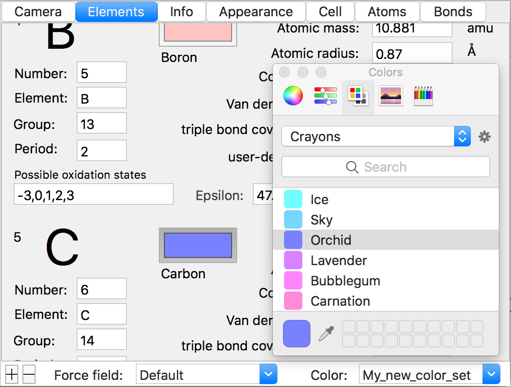
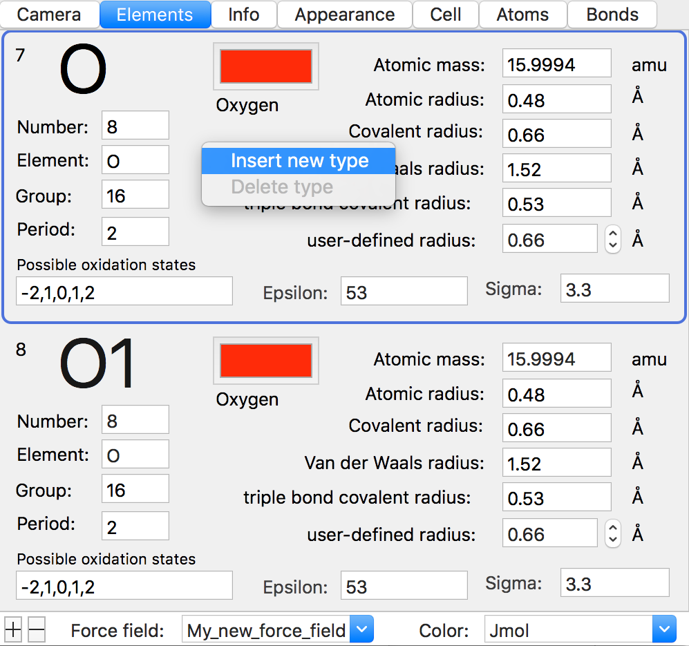

Colors are used in color-sets. Four sets are predefined: jMol, Rasmol, Rasmol modern, and Vesta. The predefined sets are immutable.
To set the color of an atom:
Go to the Elements-tab and create a new color-set. First select the color set that the new set will be based on and type in a new label for the new set.
Go to the Appearance-tab and apply the new color-set. Atoms can be colored by element-type (e.g. Si, Al, O) or by atom-type (e.g. O, O1, O2) if atoms of the same element needs to be colored differently.
The custom color-set is mutable and the color for each element-type can be edited in the Elements-tab.
If the color-set has been set (as in the previous step), then the changes are immediately visible in the render-view.

Atoms are defined in force field-sets. One set is predefined: Default. The predefined set is immutable and contains all the basic element types.
To add a new type of atom:
Go to the Elements-tab and create a new force field-set. First select the force field-set that the new set will be based on and type in a new label for the new set.
The custom force field-set is mutable for new atom-types but immutable for the standard types, since every force field set as a minimum must define the basic element types. In the the Elements-tab, right-click an element-type and create a new atom-type based on this element. The display-name, atomic mass, user-defined radius and force field parameters, epsilon and sigma, are editable.
